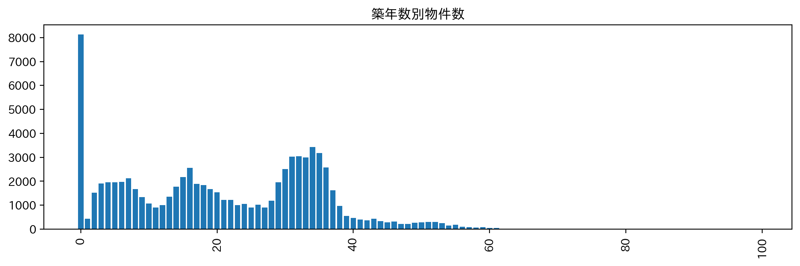
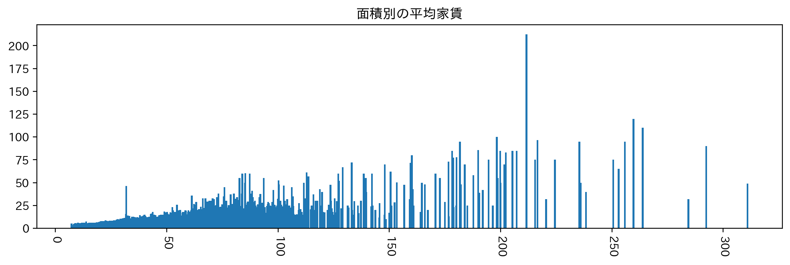
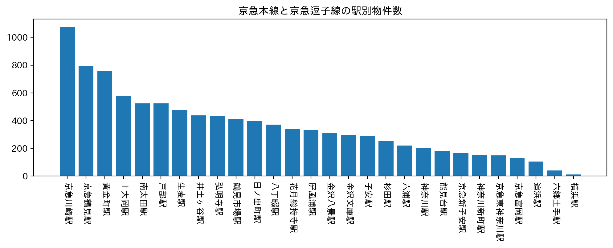
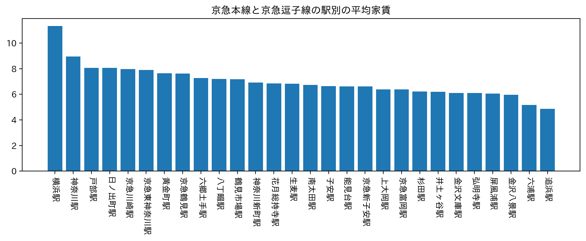
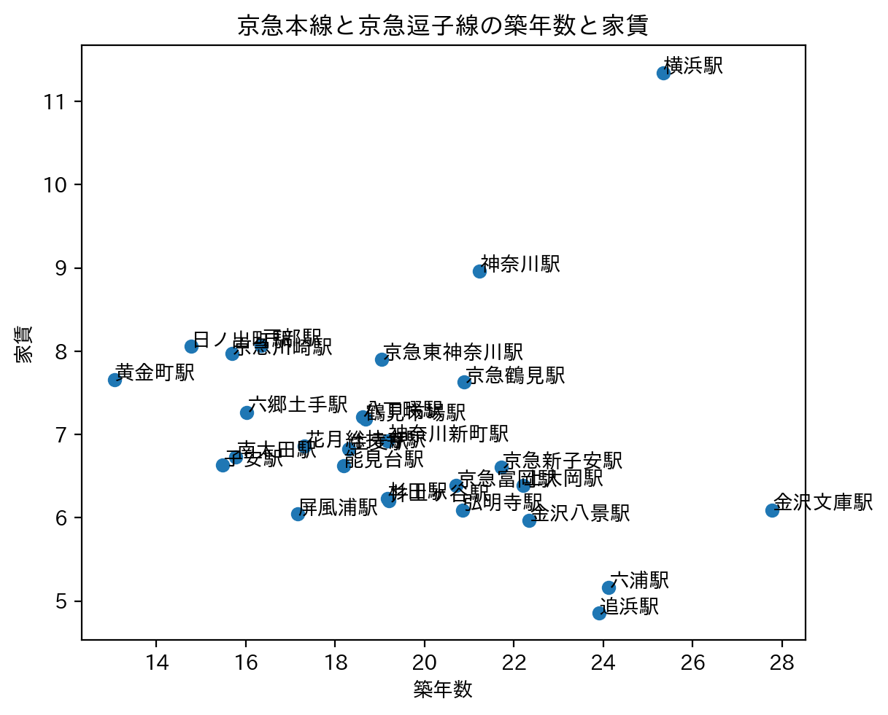
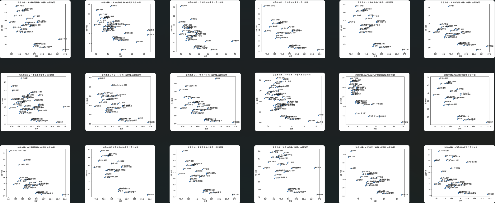
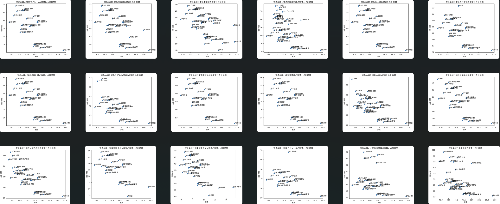
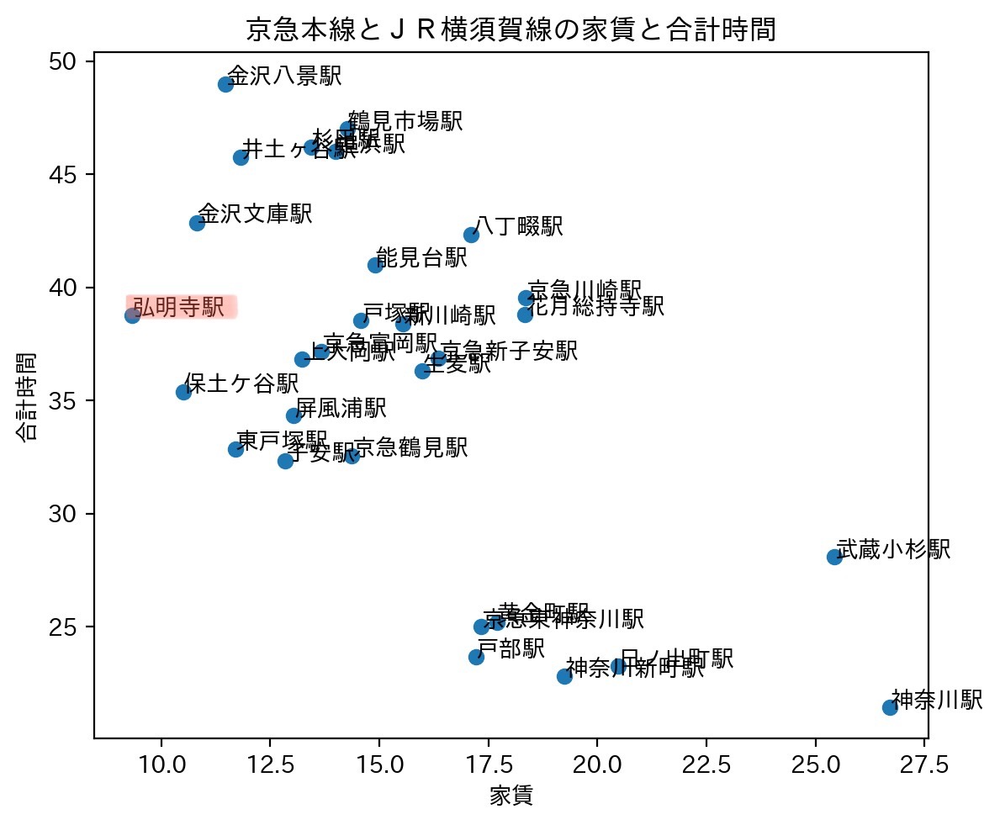
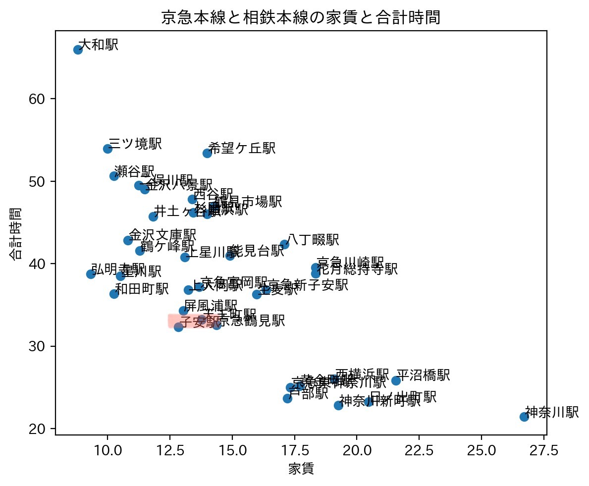
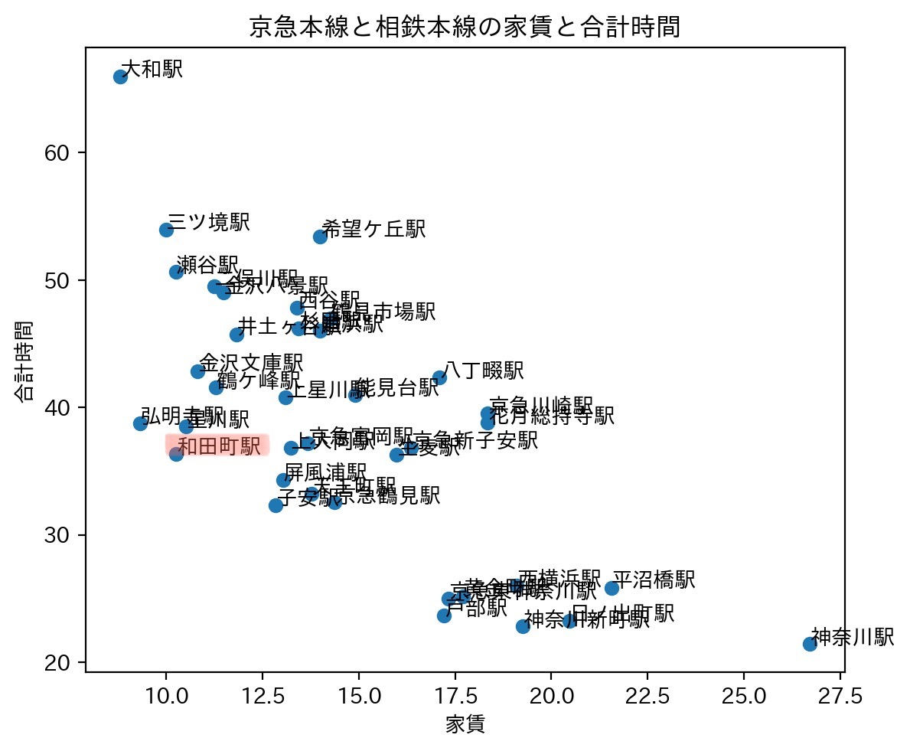

ホーム
デザイン演習Ⅰ・Ⅱ
デザイン演習 賃貸情報の分析
グラフ作成のヒント
初めに、私はグラフ作成に行き詰ったので、どのデータでどのグラフを作成できるか調べた。
①line_n_rooms.py
「 factor 別物件数グラフ」を作成する
(例)factor:築年数

②line_rank_bar.py
「 factor_1 別 平均 factor_2 グラフ」を作成する
(例)factor_1:面積 factor_2:家賃

③line_scatter.py
「 factor_1 と factor_2 の散布図」を作成する
(例)factor_1:面積 factor_2:家賃

④station _n_rooms.py
「 targets , targets の factor 別物件数」グラフを作成する
(例)targets:京急本線, 京急逗子線 factor:駅

⑤station _rank_bar.py
「targets , targets の factor_1 別 平均 factor_2 」グラフを作成する
(例)targets:京急本線, 京急逗子線 factor_1:駅 factor_2:家賃

⑥station _scatter.py
「targets , targets の factor_1 と factor_2 の 散布図」を作成する
(例)targets:京急本線, 京急逗子線 factor_1:築年数 factor_2:家賃

賃貸情報の分析
テーマ：神大の新入生とその家族が一緒に住める物件の多い駅
上記のテーマのため、家族で住みやすい3LDKの物件に絞って分析を行った。
初めに、京急本線の駅ごとの物件データを基に、CSVデータにあった、他36線の駅ごとの物件データと比較を行った。


上記のデータから、以下の3駅に注目した。
①家賃相場が低めな「弘明寺駅」

①家賃相場がある程度低く、駅近な「子安駅」

①家賃相場と駅近のバランスが取れた「和田町駅」
